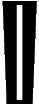
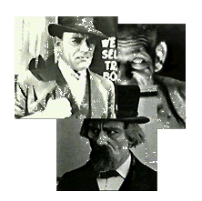
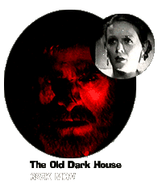

utside the Law, a gangster movie written and directed by Tod Browning
(director of Dracula and Freaks and a slew of crime movies starring
Lon Chaney), has Chaney in two roles. He plays Ah Wing, a gentle follower of
Confucius, and Black Mike Sylva, a
sharp-dressing thug. For kicks, Outside the
Law has Chinatown, a jewel heist, and a
big fight; for substance, Outside the Law has the two Chaney roles as
Jekyll and Hyde symbolism.
Thrilling, deep-down disturbing films are presented in the new Kino series, and so are a couple of goofy examples of the period. The Old Dark House is a gothic spoof, a sound film from 1932, directed in a serious-monster-movie style by James Whale (Frankenstein), and as successful as Tremors at genre parody. The titular old dark house is a Welsh manor, and on a dark and stormy night, not one but two carloads of lost travelers seek shelter. Melvyn Douglas and Charles Laughton (of all people) star. So does Boris Karloff, but he plays a beastly mute butler and delivers grunts and moans instead of snappy dialogue.
-
Outside the Law